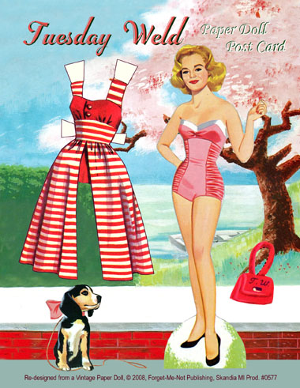

Wednesday, July the 7th, 2010
back to: title, date or indexes
Glad tidings from Pointy Town, where there has been a massive increase in the number of applications to join the local chapter of the Tuesday Weld Fan Club. You will recall that a troop of Pointy Town Weldists, on an ill-starr'd charabanc outing, made an important archaeological discovery. If by chance you do not recall it, I can refer you back to an account of it through the magic of “het internet” hyperlink.
Incidentally, did you know that British Telecom once tried —unsuccessfully—to claim copyright of the word hyperlink? That is true, though you ought not believe similar stories, such as Tesco laying claim to the phrase sausages on the cheap, The Grauniad trying for muddle-headed leftie blather, or both the BBC and ITV attempting to copyright maverick police officer with “issues”.
Anyway, it appears that the tale of the finding of the tomb of Anaxagrotax has drummed up an unprecedented amount of interest in the Tuesday Weld Fan Club, in spite of the fact that many younger Pointy Towners have absolutely no idea who Tuesday Weld is. Perhaps they think if they are allowed to join the club they will be taken on charabanc outings by sinister, spidery drivers, although my understanding is that there have been no excursions since the one reported here. In fact, there is some mystery regarding the precise activities of the Fan Club, for they have held no jamborees, jumble sales, Weldathons or film screenings for a very long time. Even their newsletter, Weld!, published every week on Tuesday, has ceased to appear in the newsagents' kiosks of Pointy Town.
I did manage to track down the minutes of the most recent executive committee meeting, but it was difficult to wring any sense out of them. Take this, for example:
We lent our ears to a man standing on one leg, who puffed upon a flute and called us fools. When he did so, he stretched out the “oo” in “fools” so that it lasted several minutes. During the whole time he maintained his monopod posture. Eventually, he was asked by Weldist No. 472 how this imprecation related to Tuesday Weld. In reply, he gave another somewhat wheezy puff on his flute and stole softly away, like Jack-in-the-Green.
Is this evidence of some sort of esoteric hoo-hah going on in the preciously staid atmosphere of the Tuesday Weld Fan Club? Certainly the sheer numbers of new applicants suggest a coup or takeover. But what in heaven's name could their agenda be? I shall keep a beady, if myopic, eye on these matters, and may send Mrs Gubbins to be an infiltrator among the infiltrators.
Meanwhile, to keep you occupied while you await further developments, here is a cut out ‘n’ keep Tuesday Weld to print, ‘n’ cut out, ‘n’ keep upon your mantelpiece. Dust it often, and dust it well.

Hooting Yard on the Air, June the 8th, 2010 : “Thieving Beerpint” (starts around 23:57)
Hooting Yard on the Air, November the 29th, 2018 : “Glad Tidings From Pointy Town” (starts around 05:33)